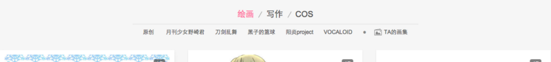

在即将度过试用期的时候，借着今天学习的文章，整理一下前段时间做用户主页时用到的pjax。
近期我站的个人主页改版，将用户发布的各类作品放到一个页面上切换，附加筛选功能。
在做筛选及翻页的过程中，我们用到了pjax。即通过ajax获取数据，然后改变url链接，这样用户可以前进后退。就像这样→

上面的二级导航就是筛选用哒～
这个就是翻页。
翻页是由php直接渲染的，所以里面的链接也是php回传的。在筛选之后ajax回传数据里面，也带了翻页的数据，就可以直接添到里面。因为pushState和replaceState不能很好的兼容低版本IE，这里我们用了jquery.history插件，在使用pushState或replaceState的时候触发 ‘statechange’事件。
因为ajax参数是作为a标签的链接形式写入翻页里，所以在翻页时需要将参数提取出来：
1 | $('.pager').on('click', 'a', function(e) { |
先阻止a标签的跳转，然后取出链接。这里有一处判断是否是ajax页，因为页面交互涉及到其他页面跳转过来的情况，所以ajaxPage作为判断［请忽略。。。
接下来就是使用pushState：
1 | var changeState = function changeState(href) { |
然后等到pushState的时候会触发’statechange’，我们再根据参数ajax取数据，最后呈现出来：
1 | //当页面url更新时更新数据 |
得益于pushState和replaceState的出现，以及jquery.history插件，这几行代码就可以有pjax效果。
嘛～～更多有关于pjax的应用，可以阅读学习浅析Web开发中前端路由实现的几种方式